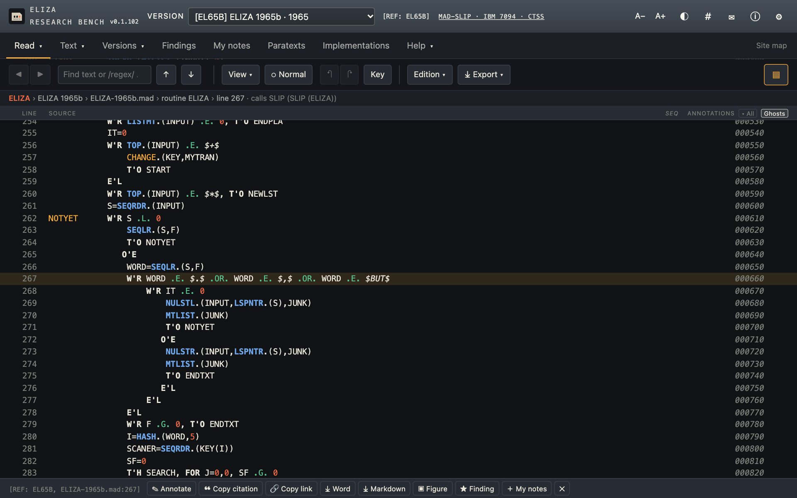
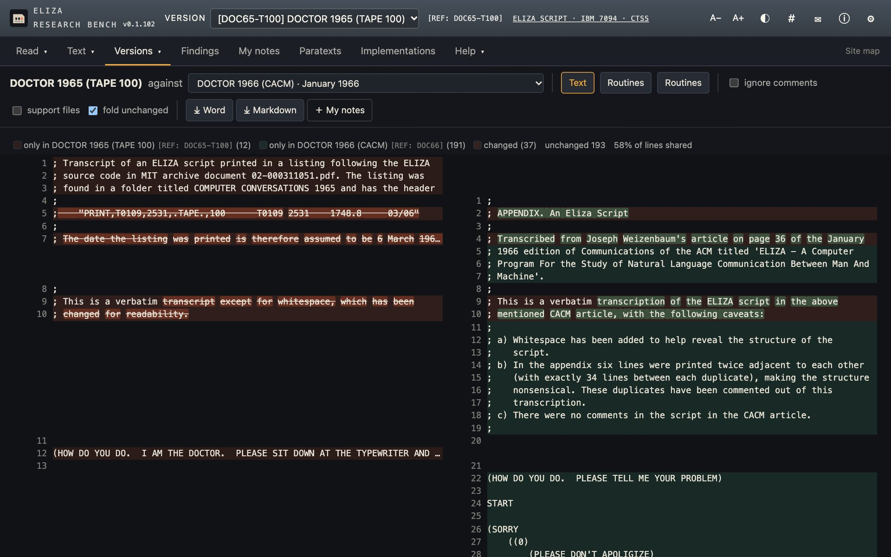
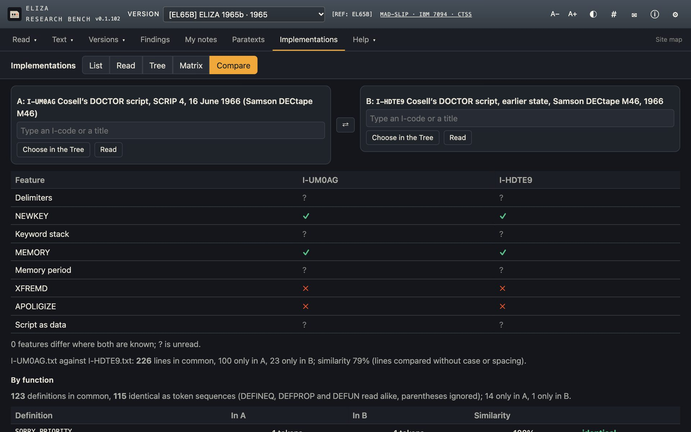
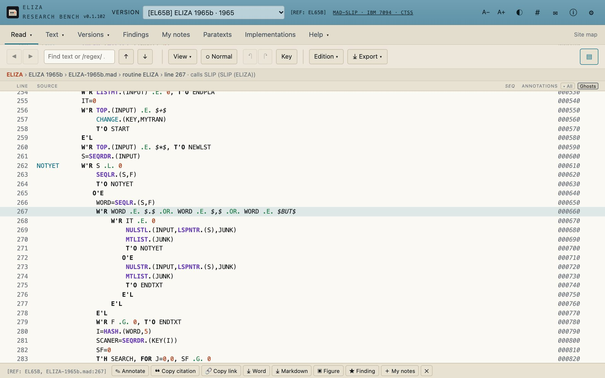
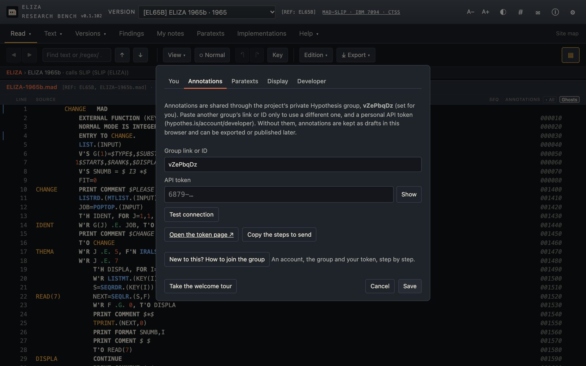
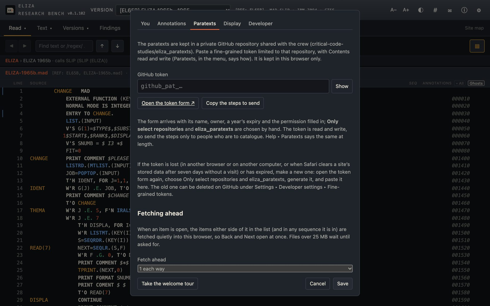

Usage · bench 0.1.102 · bench-kit 0.80.0
Using the ELIZA Research Bench
The bench reads Joseph Weizenbaum’s ELIZA (MIT, 1964–68) in its surviving versions, in the browser, with nothing to install. This page covers the steps, three worked examples, the two optional tokens, and the problems people meet.
A bench for reading ELIZA’s code
The ELIZA Research Bench presents the texts of ELIZA as they survive: the 1965 MAD-SLIP source recovered from Weizenbaum’s papers at MIT, its SLIP library, the DOCTOR scripts of 1965 and 1966, and the conversations printed from them. It links every name in the code to where it is defined and used, collates any two versions line by line or by routine, and shares annotations through a private Hypothesis group, alongside a catalogue of 139 later implementations of ELIZA.
Using the bench
In the browser
Prerequisite: a current desktop browser. Reading, collating, citing and exporting need no account and no token.
- Open findingeliza.org/research/. It opens on ELIZA 1965b, the MAD-SLIP source.
- Choose a text in the Version menu at the top: the program, a DOCTOR script, a conversation or the SLIP library.
- In Read, click a name in the code for where it is defined and used. Type in Find for text or a /regex/.
- Click a line (shift-click for a range) to select it. The bar at the foot cites it, copies a link to it, exports it to Word or Markdown, or makes a figure of it.
- Open Versions ▾ ▸ Collate to set two texts side by side, line by line or by routine.
- Open Implementations for the catalogue of later ELIZAs: a list, a family tree, a feature matrix and a comparison of any two.
On your own machine
Prerequisites: git and Python 3. To run the tests as well: Node 22 and Google Chrome or Chromium (no packages to install). The clone is about 76 MB. The bench’s shared code, bench-kit, is a git submodule, hence --recurse-submodules.
git clone --recurse-submodules https://github.com/critical-code-studies/ELIZA.git cd ELIZA python3 -m http.server 8000
Then open http://localhost:8000/research/. The bench has to be served over HTTP; opened as a file it stops at “Could not load” (see Troubleshooting). To run the tests, from the same folder:
node research/kit/tools/test.js
Output, 27 October 2026
Three worked examples
A line by its link: the BUT test in the 1965 source
The parameter l=0:267 selects line 267 of the version’s first file. This is the line where ELIZA treats a full stop, a comma and the word BUT as places to cut the input.
Input
https://findingeliza.org/research/?v=1965b&l=0:267
Output: the selected line and the selection bar

Collate: DOCTOR on TAPE 100 (1965) against DOCTOR in CACM (1966)
tab=compare opens Collate; v and b name the two texts.
Input
https://findingeliza.org/research/?v=doctor65t100&tab=compare&b=doctor
Output: the summary line

Implementations: two of Cosell’s DOCTOR scripts compared by function
iv=compare opens the Implementations comparison; ia and ib are the two entries’ I-codes. Here, SCRIP 4 of 16 June 1966 against an earlier state of the same script, both from Peter Samson’s DECtape.
Input
https://findingeliza.org/research/?tab=implementations&iv=compare&ia=I-UM0AG&ib=I-HDTE9
Output: the two summaries

The bench, dark and light
The bench opens in its dark 7094 theme. ◐ in the top bar switches to your last light theme; ⚙ Settings ▸ Display chooses among seven.



The two tokens, and what they unlock
Reading, collating, citing, exporting and the Implementations catalogue need no token. Two optional tokens add the shared parts: a Hypothesis token for annotations, and a GitHub token for the paratext archive, which is open to the project team only. There are no API keys for a model or service to buy.
Both tokens are pasted into ⚙ Settings and kept in your browser’s local storage, for that browser and that address only. The bench is static files on GitHub Pages: there is nothing to configure on a server and no secret in the deployment, so the steps are the same on findingeliza.org and on localhost, but a token saved on one is not seen on the other.
Hypothesis API token
- Provider
- Hypothesis (hypothes.is). Free.
- Unlocks
- Publishing and reading annotations in the project’s private group. Without it, annotations are kept as drafts in this browser and can be exported or published later.
- Get it
-
- Make an account at hypothes.is/signup.
- Ask the project for an invitation to the group, and open the link you are sent.
- Generate a token at hypothes.is/account/developer.
- Where it goes
- ⚙ Settings ▸ Annotations ▸ API token. The group is filled in already. Then Save.
- Check it
- Test connection answers “Connected as your account; group “name” found.”
- Help in the bench
- “New to this? How to join the group” and “Copy the steps to send”, in the same pane.
GitHub fine-grained token
- Provider
- GitHub. Free.
- Unlocks
- The Paratexts tab: the private archive of documents about ELIZA, in the repository
critical-code-studies/eliza_paratexts, read and write. - Before you start
- Accept the invitation to the
critical-code-studiesorganisation (sent by email). GitHub does not let fine-grained tokens reach an organisation’s repositories for people added only as outside collaborators. - Get it
-
- ⚙ Settings ▸ Paratexts ▸ Open the token form. Its name, owner, a year’s expiry and Contents read and write are filled in.
- Under Repository access choose Only select repositories, then eliza_paratexts.
- Generate the token and copy it (it begins
github_pat_).
- Where it goes
- ⚙ Settings ▸ Paratexts ▸ GitHub token. Then Save.
- Check it
- Open the Paratexts tab: the catalogue loads (415 items on 27 October 2026).
- Rate limit
- GitHub allows 5,000 API requests an hour for a signed-in user; the 403 message below names it.
What the error messages mean
| The bench says | Meaning and fix |
|---|---|
| The token was not accepted. | Hypothesis did not recognise the token: it was mistyped, revoked or regenerated. Hypothesis answers such a token as an anonymous visitor (checked with an invalid token). Paste the current one from the developer page. |
| Connected as … ; but that group was not found for this account. | The token works, but this account has not joined the group. Open the invitation link while signed in to that account. |
| Hypothesis status: … | Any other answer from Hypothesis, with its status code and the start of its message. |
| The GitHub token was refused: check it in ⚙ Settings. | GitHub answered 401 (“Bad credentials”, checked with an invalid token): the token is wrong, deleted or expired. Make a new one from the token form. |
| GitHub refused: the token may lack write access to critical-code-studies/eliza_paratexts, or the rate limit is reached. | A 403. Check that the token has Contents read and write, or wait for the hourly limit to reset. |
| Not found: the token may not reach critical-code-studies/eliza_paratexts (ask to be added to the crew). | A 404: GitHub hides a private repository from anyone it does not admit (an unauthenticated request gets 404, checked). The token was made without choosing eliza_paratexts, or your organisation invitation is not yet accepted. |
Symptom, then fix
- The page says “Could not load” and shows no codeThe bench was opened as a file (
file://…/research/index.html). Browsers block a file page from fetching the texts (the console shows “blocked by CORS policy”). Serve the folder withpython3 -m http.server 8000and openhttp://localhost:8000/research/. - The bench does not start after cloningThe clone was made without
--recurse-submodules, soresearch/kitis empty. In the repository rungit submodule update --init. - “Address already in use” when starting the serverAnother program has port 8000. Start on another port, for example
python3 -m http.server 8080, and openhttp://localhost:8080/research/. - The bench looks out of date after a releaseThe browser is showing a cached copy. Reload the page, bypassing the cache (Shift with Reload). ⚙ Settings ▸ You ▸ “Tell me when a newer release is live” puts a bar at the foot of the page when one is.
- A token that worked has goneTokens are kept per browser and per address: another browser, another computer, or
localhostinstead of findingeliza.org has none. Safari clears a site’s stored data after seven days without a visit. GitHub tokens from the form expire after a year. Paste the token again, or make a new one. - Annotations stay as draftsNo Hypothesis token, or the account has not joined the group. Run Test connection in ⚙ Settings ▸ Annotations and follow its message (table above).
- The tests do not run
research/kit/tools/test.jsdrives headless Chrome and needs Node 22 and Google Chrome or Chromium. Run it from the repository’s top folder. - Paratexts asks for a token you cannot getThe archive is for the project team. The rest of the bench, including the Implementations catalogue and its public files, works without it.